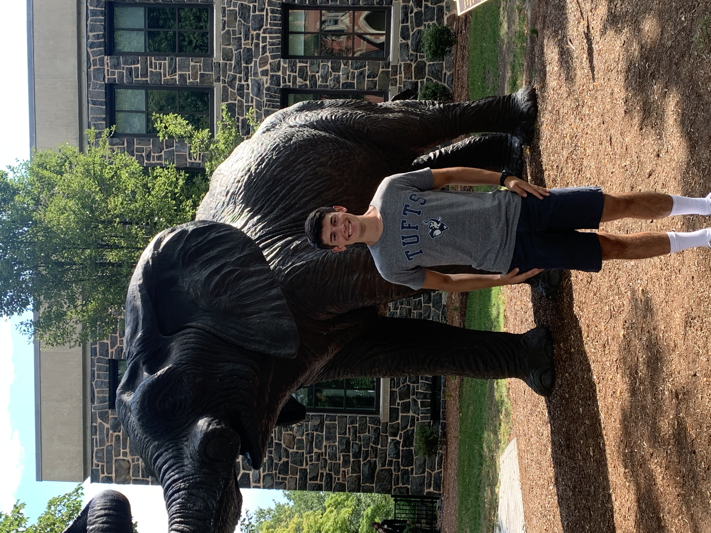

Bio

Matthew Torres is a Senior at Tufts University, where he is double majoring in
Computer Science and Music, Sound, and Culture. He was born in Worcester, MA in 2001.
From a young age he showed an interest in computers as well as music.
He began playing violin as early as kindergarten, and switched to piano in second grade.
He learned to play Trumpet starting in fourth grade, guitar and percussion in sixth, and the french horn and pipe organ in high school, all while learning to code in HTML, Java, and Python.
He graduated from Grafton High School in 2020, and started his first year at Tufts in the height of the COVID-19 Pandemic.
He devoted much of his time to his studies, taking both CS and Music classes including Data Structures and Algorithms, Music Theory courses, and Conducting.
Once restrictions were lifted, he made up for lost music time by taking on a number of music directing positions for theatrical productions at Tufts.